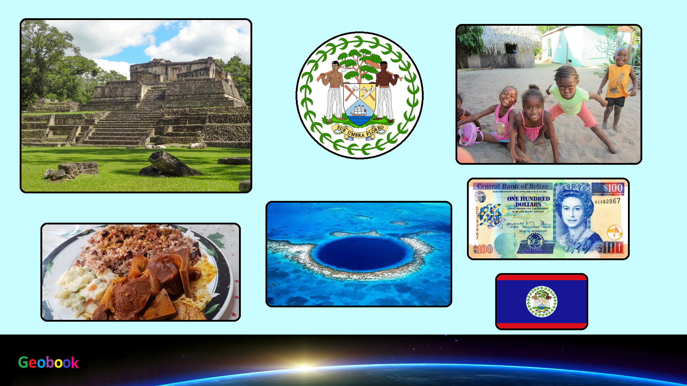

____
Климат
Тропический пассатный. Климатические условия Белиза чрезвычайно разнообразны для столь небольшой территории. Средняя температура воздуха летом в равнинных районах около +26 C, в горных около +19 С. Зимой на равнинах около +21 С, в горах до +17 С.
Но главное отличие в погодных условиях заключается здесь не в температуре воздуха, а в количестве выпадающих осадков. В среднем за год в северных районах выпадает до 1350 мм дождя (с "сухим сезоном" с ноября по апрель), и до 4000 мм в год - на юге, причем здесь "сухой сезон" гораздо короче - около двух месяцев. Максимум дождливых дней выпадает обычно на период с июня по август, но эта закономерность не учитывает влияния горных хребтов. В зависимости от высоты места над уровнем моря и экспозиции склона, количество осадков может заметно разниться даже между близлежащими пунктами.
С июня по ноябрь часты разрушительные тропические ураганы.
____
